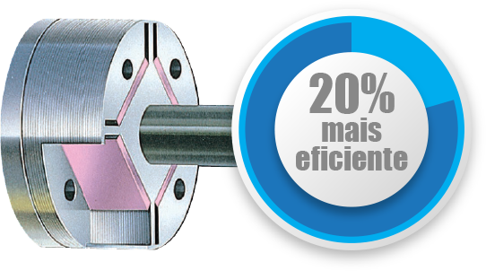
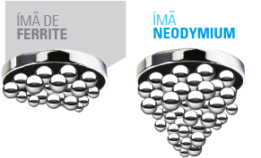

CHAVE DA MELHORIA
O ímã neodymium é muito mais forte do que o ímã popular de ferrite, o que causa o efeito de economia do compressor.

Com engenharia japonesa, o equipamento Exclusive possui design clean e moderno pensado para garantir a melhor
distribuição de ar no ambiente, evitando fluxos de ar desconfortáveis. O aparelho economiza de 30% ~ 60% de energia,
disponível em capacidades de 9.000 a 24.000 Btu/h.
O inverter é uma tecnologia para economizar energia que maximiza a eficiência em condicionadores de ar controlando de forma eficiente a velocidade do motor, proporcionando maior conforto e menor consumo de energia com redução de 30% ~ 60%.
Começar a correr e parar abruptamente, descansar e então começar o ciclo novamente, gasta mais energia...
...enquanto um ritmo apropriado de corrida, faz com que o esportista corra de forma mais eficiente e com menor gasto de energia.
(1) Comparado com Splits que utilizam compressores de rotação fixa.
Enquanto as microfibras do filtro de ar padrão tipo tela captam a poeira, o filtro fotocatalítico de titânio/apatita absorve os odores alérgenos. Esse filtro oferece um desempenho consistente por aproximadamente três anos (1).
(1) Duração máxima do filtro caso seja lavado uma vez a cada seis meses. Esse filtro não é medicinal. Benefícios como a absorção de odores e alérgenos só são efetivos para as substâncias que passam diretamente através do filtro de apatita de titânio.
1 - Filtro padrão tipo Tela
2 - Filtro fotocatalítico de titânio/apatita
O formato é desenvolvido para lançar o ar para cima rente ao teto proporcionando resfriamento rápido e melhor distribuição de ar no espaço.
O Novo Split Hi Wall Exclusive é compatível com o Kit Wi-fi* que permite o controle do seu ar condicionado através de um smartphone ou tablet.
*Este item se trata de brinde promocional não elegível à troca ou garantia.
Saiba mais em www.conectadaikin.com.br
A Daikin oferece garantias líderes de mercado: São 2 anos no produto total e 10 anos no compressor.
As unidades internas possuem operações silenciosas com baixo nível de ruído, proporcionando uma noite confortável e silenciosa.
O compressor é um dos principais componentes do condicionador de ar e sua eficiência está diretamente relacionada ao motor. A Daikin foi a primeira a utilizar com sucesso o motor de relutância DC com imãs de Neodymium no compressor de condicionadores de ar residenciais. O motor Neodymium é 20% mais eficiente que os demais motores de compressores inverters, possibilitando maior potência com menor consumo de energia.
O ímã neodymium é muito mais forte do que o ímã popular de ferrite, o que causa o efeito de economia do compressor.
O trocador de calor da unidade externa é feito com tubos de cobre e aletas de alumínio revestidas por um tratamento anticorrosivo especial. A superfície das aletas é coberta com uma fina camada de resina acrílica e uma segunda camada de revestimento hidrofílico que geram aumento da resistência à corrosão.